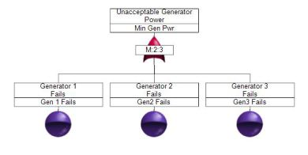

Part I: Commonly Used Events and Static Gates
Introduction
Fault tree analysis (FTA) is a procedure for determining the various combinations of hardware and software failures and human errors that can result in the occurrence of a specified undesired event at the system level. The undesired event to evaluate is referred to as the top event. It is generally some type of failure or malfunction. All of the hardware and software failures and humans errors that can lead to the occurrence of the top event are referred to as events.
FTA begins with clearly defining the top event and then determining the various combinations of events that can lead to its occurrence. The successive levels in the fault tree depict how the propagation of lower-level events causes the top event to occur. Logic operators known as gates determine how events are generated. In the construction of a fault tree, various symbols are used to represent events and gates.
Events
This section describes the types of events that can be inserted in a fault tree. It also shows the symbols that Windchill FTA uses to represent each event.
Basic Event
A basic event represents the lowest level, or terminating event, in a fault tree. A basic event has no inputs. It simply represents the occurrence of an event in the system being analyzed. A basic event is either a component-level event that is not further resolved or an external event. Basic events can include hardware or software failures, human errors, and system failures. Basic events are the most commonly used primary events in FTA. Primary events are lower-level events.
Example
CD player can be powered by batteries or electrical power. The CD player fails to operate if the batteries are dead AND no electrical power source is available. Thus, an AND gate, which is described later in this article, is inserted in the fault tree along with two basic events: No Battery and No Electric.
Undeveloped Event
An undeveloped event is used if further resolution of that event is not necessary for proper evaluation of the fault tree or if the information necessary for developing this event is not currently available. While an undeveloped event is similar to a basic event, it is represented by a different symbol to signify that it is possible to break this event down into associated gates and events, even though this has not been done for this particular analysis.
Example
A vehicle will not start if there is no fuel OR if there is some other mechanical problem. Thus, an OR gate is inserted in the fault tree along with a basic event (No Gas) and an undeveloped event (Mech Problem). The undeveloped event indicates that other mechanical problems are not within the scope of the analysis. The OR gate is fully described later in this article.
Conditional Event
A conditional event is used along with an Inhibit gate, which is described later in this article. In a fault tree with an Inhibit gate, the output occurs only when the input events occur AND a conditional event is satisfied.
Example
From the fire triangle, we know that there will be fire when fuel and a heat source are present, given the presence of oxygen. The need for the presence of oxygen is the conditional event in the following fault tree. When you insert an Inhibit gate in a Windchill fault tree, Windchill automatically inserts the conditional event so that you can specify the condition that must be satisfied. The main purpose is to visually emphasize the presence of the condition, which is generally either a very rare or very common event.
House Event
A house event is a special type of event employed for specific uses within a fault tree analysis. Common uses for house events are:
- To represent an event that is normally expected to occur.
- To disable or enable parts of a fault tree to make them functional or non-functional. To represent trigger events, switching events, and external events.
A house event can be turned on or off to specify the conditions present under a specific scenario. When a house event is turned on (TRUE), that event is presumed to have occurred and the probability of that event is set to 1. When a house event is turned off (FALSE), it is presumed not to have occurred, and the probability is set to 0.
House events are commonly used to make parts of a fault tree functional or non-functional. This can help you to more effectively analyze large multi-level fault trees by allowing you to "turn off" portions of a fault tree to evaluate varying scenarios.
House events can also be used to model "trigger" events. When a trigger event occurs, the associated logic path is considered. When the trigger event does not occur, the associated logic path is ignored.
Example
A compressor tank will fail when electrical power is not available. Because electrical power is presumed to be present, the even "Power On" is inserted as a house event. The house event is turned on to represent that the event has occurred.
Basic Static Gates
Gates are used to represent the failure logic paths between the various fault tree levels. A static gate indicates a gate where the order of the inputs does not matter. This means that the underlying occurrence of events is not sequence-dependent. Only the occurrence of the input event is considered, not its temporal relation (order of events in time) to the occurrence of other events.
This section describes the static gates that are most commonly used to represent the failure logic between successive levels of a fault tree. It also shows the symbols that Windchill Fault Tree uses to represent these gates. For all static gates, the output can be the top event or any intermediate event. The input events can be basic events, intermediate events (outputs of other gates), or combinations of both.
AND Gate
The AND gate is used to indicate that the output occurs if and only if all the input events occur. There must be at least two input events to an AND gate.
Summary of Logic: All events must be TRUE for the output to be TRUE.
A truth table for the AND gate follows. The Boolean equation for an AND gate is T = A * B
| A | B | Output |
|---|---|---|
| True | True | True |
| True | False | False |
| False | False | False |
Example
A CD player can be powered by batteries or electrical power. The CD player fails to operate if the batteries are dead AND no electrical power sources is available.
OR Gate
The OR gate is used to indicate that the output occurs if and only if at least one of the input events occur. There must be at least two inputs to an OR gate.
Summary of Logic: If at least one event is TRUE, the output is TRUE. If all events are FALSE, the output is FALSE.
A truth table for the OR gate follows. The Boolean equation for an OR gate is T = A + B.
| A | B | Output |
|---|---|---|
| True | True | True |
| True | False | False |
| False | True | False |
| False | False | False |
Example
A vehicle will not start if there is no fuel OR there is some other mechanical problem.
Voting Gate (m/n)
The Voting (m/n) gate is used to indicate that the output occurs if and only if at least m out of the n input events occurs. The input events do not need to occur at the same point in time but should be present at the same time. The output occurs when at least m input events occur. When m = 1, the Voting gate behaves like an OR Gate.
Summary of Logic: If m = 2 and n = 3, two input events must be TRUE for the output to be TRUE. If zero or one input events are TRUE, the output is FALSE.
A truth table for a Voting (2/3) gate follows. The Boolean equation for a three-input Voting gate is T = (A * B) + (B * C) + (C * A).
| A | B | C | Output |
|---|---|---|---|
| True | True | True | True |
| True | True | False | True |
| True | False | True | True |
| True | False | False | False |
| False | True | True | True |
| False | True | False | False |
| False | False | True | False |
| False | False | False | False |
Example
Power is supplied by three generators. When two generators are working, adequate power is supplied. When only one generator is working, there is not enough power.

Inhibit Gate
The Inhibit Gate is used to indicate that the output occurs when the input events (I1 and I2) occur and the input condition (C) is satisfied. An Inhibit Gate is very much like an AND gate with a condition. When you insert an Inhibit Gate in a Windchill fault tree, a conditional event is automatically inserted along with it so that the input condition can be specified.
Summary of Logic: If one input event is FALSE, the output is FALSE. If all input events and the input condition are TRUE, the output is TRUE.
A truth table for an Inhibit Gate follows. The Boolean equation for an Inhibit Gate T = (I1,I2) * C.
| I1 | I2 | C | Output |
|---|---|---|---|
| True | True | True | True |
| True | True | False | False |
| True | False | True | False |
| True | False | False | False |
| False | True | True | False |
| False | True | False | False |
| False | False | True | False |
| False | False | False | False |
Example
From the fire triangle, we know that there will be fire when fuel and a heat source are present, given the presence of oxygen. The two basic events and the conditional event are the three legs of the triangle. All three events must be TRUE for the top event (Fire) to occur.
Transfer Gate
The Transfer Gate is used to link logic in separate areas of a fault tree. When a Transfer Gate is selected for insertion, a Transfer In Gate is inserted in the fault tree. The Transfer In gate is then linked to a Transfer Out gate, which represents the top gate of another fault tree.
There are two primary uses of Transfer Gates.
- An entire fault tree may not fit on a single sheet of paper. You can use Transfer gates to organize various portions of a large fault tree on separate sheets of paper.
- The same fault tree logic may be used in different places in a fault tree. You can use Transfer Gates to define this logic once and use it wherever necessary. Therefore, repeated gates can be created using Transfer Gates.
Remarks Gate
The Remarks Gate is used for the entry of comments. A Remarks Gate has no calculation data associated with it and therefore has no effect on calculations. However, the tree branch may continue after a Remarks gate. There can be only one input to a Remarks Gate.
Example
The fault tree below is the same as the example for the OR gate, with a Remarks gate added to explain the other mechanical problems that could contribute to the car not starting.
Pass-Through Gate
The Pass-Through Gate is used for visually aligning the events and gates in a fault tree. A Pass-Through gate extends the vertical connector down through an additional fault tree level.
The Pass-Through Gate is used for visually aligning the events and gates in a fault tree. A Pass-Through gate extends the vertical connector down through an additional fault tree level.
Example
The fault tree below is the same as the one for the Remarks gate example except a Pass-Through gate has been inserted to extend the connector to the basic event from the second level to the lowest level.
Conclusion
This article describes the events and static gates most commonly used in fault tree construction. There are additional static gates that can be used to indicate how the lack of an event's occurrence can cause the top event to occur. These gates, sometimes referred to as non-coherent gates, are described in Part II of this series. There are also dynamic gates that can be used to consider the order in which input events occur. These gates are described in Part III of the series. For additional information about fault trees and the many benefits provided by Windchill Quality Solutions FTA, click here.